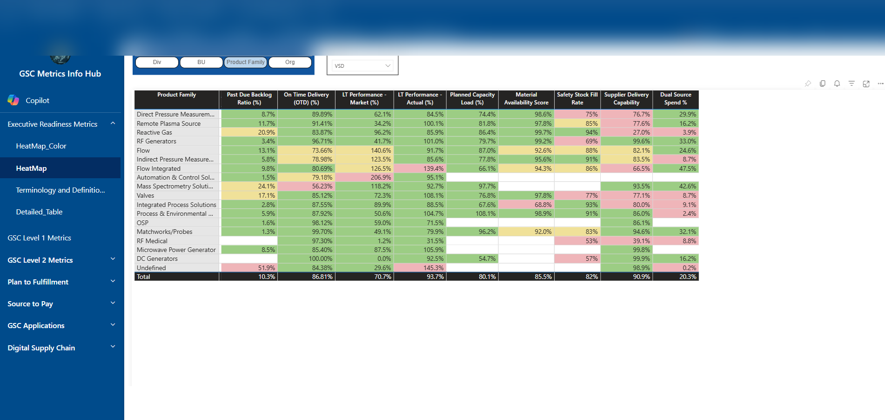

Executive Dashboards
Power BI dashboards for leadership visibility, KPI tracking, trend analysis, and operational performance reviews.
Power BI • Power Apps • Power Automate • SharePoint • SQL
I help teams turn scattered spreadsheets, manual reporting, and disconnected workflows into clean dashboards, automated processes, and practical business applications.

What I do
I specialize in building practical solutions for supply chain, manufacturing, sourcing, procurement, quality, and operations teams. My work combines analytics, process design, stakeholder requirements, and Microsoft Power Platform tools to improve visibility and reduce manual tracking.
Services
Power BI dashboards for leadership visibility, KPI tracking, trend analysis, and operational performance reviews.
Replace messy spreadsheet trackers with structured SharePoint lists, clean data entry forms, and controlled workflows.
Automated approvals, notifications, assignments, audit trails, and process routing using Power Automate.
Power Apps that guide users through requests, updates, queues, assignments, and status changes.
Selected Portfolio
Developed an executive and operational dashboard view for monitoring global supply chain metrics, supplier activity, open items, and performance trends.

Built operational analytics for monitoring on-time delivery, supplier status, buyer performance, and aging lead time variance.

Converted a manual request process into a guided digital form with required fields and routing logic based on request type and role.

Created queue-based navigation so users could review, assign, and update requests through defined process stages.

Built dashboard reporting for request volume, aging, ownership, status, business category, and detailed follow-up records.

Designed a heatmap-style matrix to compare performance across categories, sites, suppliers, and business segments.
End-to-end systems
I design solutions that connect intake, data storage, approvals, notifications, reporting, and stakeholder visibility.
How I work
Review the current process, pain points, data sources, users, and decision needs.
Map the workflow, define the data model, and align on the simplest useful solution.
Create the dashboard, app, automation, or reporting workflow using scalable tools.
Test with users, document the process, train the team, and iterate based on feedback.
Tools
Contact
Send me a quick note about what you are trying to improve, automate, or report on.
Email Me